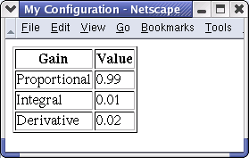

![Diagram of NML build process: A pale yellow rectangle labeled 'User Written C++ Header, defining NML messages(*.hh)' is above an arrow pointing to a pale green oval labeled 'NML CodeGen'. This oval is above arrows pointing to a pale blue box labeled 'Automatically Generated C++ header with prototypes for init and format functions.(*n_codegen_prototypes.hh)', another labeled 'Automatically Generated C++ file with update, init and format functions.(*_n.hh)' and a group labeled 'Java Files').Below the pale blue boxes just described and on the left is a pale yellow box labeled 'User Written C++ Application with main() and calls to high level NML functions'. To the right of this is an orange oval labeled 'C++ Compiler and Linker'. Arrows go from the pale blue box above labeled 'Automatically Generated C++ file with update, init and format functions.(*_n.hh)' and from the the pale yellow box to the left labeled 'User Written C++ Application with main() and calls to high level NML functions' to the orange oval labeled 'C++ Compiler and Linker'. The orange oval is above an arrow pointing to a pale blue box labeled 'NML C++ Application'. To the left of this pale blue box are arrows going both from and to a group of grey boxes labeld 'XML files'. To the right of the last blue box are arrows going both from and to a group of grey boxes labeled 'NML Shared Memory Buffers'.](NMLbuild3.png)
According to World Wide Web Consortium (W3C) at http://www.w3.org/XML/:
Extensible Markup Language (XML) is a simple, very flexible text format derived from SGML (ISO 8879). Originally designed to meet the challenges of large-scale electronic publishing, XML is also playing an increasingly important role in the exchange of a wide variety of data on the Web and elsewhere.
The Neutral Message Language (NML) provides a way of defining and transmitting messages over a network or between processes using a variety of protocols. Typically messages passed between processes on the same computer use shared memory and use a raw binary format specific to the operating system, compiler and processor architecture in use. Messages across a network are typically sent using the eXternal Data Representation (XDR) which is also a binary format but is not specific to a particular operating system or processor. While XDR is usually more efficient than XML, NML can be configured to compose and/or parse XML. There is also an experimental program that allows XML Schemas with some restrictions to be automatically converted to NML message classes. XML also allows a little more flexibility in defining the NML message structures, and the use of XML allows for some additional error checking and debugging support. NML never produces and currently can not parse mixed content. The XML messages we deal with here must be small enough to be stored entirely in memory.
I like lots of examples.
Examples are in boxes like this.
Occasionally I need to highlight more formal prototypes and definitions.
Prototypes are in boxes like this.
See NML Configuration Files for a complete description of the configuration files. There are three options that might be of interest here. The string "xml" can replace "xdr" or "disp" at the end of the buffer line to force all remote communication to use the XML format for the data rather than XDR or comma delimited ascii text. "xmldiff" can be used in the same place and instructs NML only to send the variables that changed from the last message. This generally can not be used with classes generated from external XML schema since it requires that maxOccurs for any element not be set greater than one. It is also incompatible with setting the option cms->add_array_indexes_to_name=false described below. The string "xmllog" placed at the end of either a process line or buffer line does not change the way processes communicate but causes one process or all processes to log each message received or sent to a file in XML format. Buffers that may contain messages that contain unions or NML_UNBOUNDED_ARRAYS must have the option "xml" set and must have neutral set to 1 on the buffer line.
In the section NML C++ Headers and the Code Generation Tool details will be given on how to define the NML message classes and how their definition will affect the generated or expected XML. Combining this with changes in the NML configuration file would allow existing NML applications to begin passing messages in XML rather than XDR without any changes to the user written source code. The next section describes functions that new applications could use to make use of NML and XML within their application.
The simplest way to use XML would probably be to use it to allow NML messages to persist between runs of the application.
The following functions could be used.
NMLmsg *NML::readMsgFromXmlFile (const char *filename) int NML::xmlMsgSaveAs (NMLmsg * nml_msg, const char *filename)
in myconf.h
#ifndef MY_CONF_H
#define MY_CONF_H
#include <rcs.hh>
#define MY_CONF_TYPE 10001
class MY_CONF : public NMLmsg
{
public:
MY_CONF();
void update(CMS *);
double p_gain;
double i_gain;
double d_gain;
};
#endif
in writeconf.cc
#include "myconf.h"
#include "myconf_n_codegen_protos.hh"
int
main(int argc, const char **argv)
{
NML nml(MY_CONF_format,0,0,0);
MY_CONF cf;
cf.p_gain=0.99;
cf.i_gain=0.01;
cf.d_gain=0.02;
nml.xmlMsgSaveAs(&cf,"myconf.xml");
exit(0);
}
Passing zero for the buffer name, process name and configuration file to the NML constructor only works if you are not interested in actually communicating with another process. This can be compiled and run with the following series of commands:
nml_codegen myconf.h g++ writeconf.cc myconf_n.cc -Ipathtorcslibinclude -Lpathtorcsliblibs -lrcs -o writeconf ./writeconf
This should create the following file for myconf.xml:
<?xml version="1.0"?> <MY_CONF> <!--MY_CONF MY_CONF--> <p_gain>0.99</p_gain> <i_gain>0.01</i_gain> <d_gain>0.02</d_gain> </MY_CONF>
in readconf.cc
#include "myconf.h"
#include "myconf_n_codegen_protos.hh"
#include <stdio.h>
int
main(int argc, const char **argv)
{
NML nml(MY_CONF_format,0,0,0);
MY_CONF *cf = (MY_CONF *) nml.readMsgFromXmlFile("myconf.xml");
if(NULL != cf)
{
printf("p:%f\ni:%f\nd:%f\n",cf->p_gain,cf->i_gain,cf->d_gain);
}
exit(0);
}
Use the following commands to compile and run:
g++ readconf.cc myconf_n.cc -Ipathtorcslibinclude -Lpathtorcsliblibs -lrcs -o readconf ./readconf
The following output should be produced:
p:0.990000 i:0.010000 d:0.020000
When NML reads the XML data it currently does not do a full validation using a schema. This means if the messages were generated with a schema and the input is in invalid NML may or may not print an error and return NULL. However if it is grossly wrong an error message is very likely. Full validation might be added to a future version but it would most likely reduce performance. If this is necessary for your application you may want to check with a third party XML Schema validator before the call to readMsgFromXmlFile.
The following can be used to convert between XML stored in a character string and an NML message. After a call to xml2msg the message is retrieved with NML::get_address().
NMLTYPE NML::xml2msg (const char *string) const char * NML::msg2xml (NMLmsg * nml_msg)
According to World Wide Web Consortium (W3C) at http://www.w3.org/XML/Schema:
XML Schemas express shared vocabularies and allow machines to carry out rules made by people. They provide a means for defining the structure, content and semantics of XML documents.
The following functions can be used to generate an XML Schema that describes the XML messages that can be sent or received from a given NML channel.
const char * NML::xmlSchema (void) int NML::xmlSchemaSaveAs (const char *filename)
in writeconfschema.cc
#include "myconf.h"
#include "myconf_n_codegen_protos.hh"
int
main(int argc, const char **argv)
{
NML nml(MY_CONF_format,0,0,0);
nml.xmlSchemaSaveAs("myconf.xsd");
exit(0);
}
Use the following commands to compile and run:
g++ writeconfschema.cc myconf_n.cc -Ipathtorcslibinclude -Lpathtorcsliblibs -lrcs -o writeconfschema ./writeconfschema
The output stored in myconf.xsd should be:
<?xml version="1.0"?> <xsd:schema xmlns:xsd="http://www.w3.org/2001/XMLSchema"> <xsd:element name="MY_CONF" type="MY_CONF"/> <xsd:complexType name="MY_CONF"> <xsd:sequence> <xsd:element name="p_gain" type="xsd:double"/> <xsd:element name="i_gain" type="xsd:double"/> <xsd:element name="d_gain" type="xsd:double"/> </xsd:sequence> </xsd:complexType> </xsd:schema>
One can use third party tools to prove that messages such as myconf.xml conform to the requirements expressed in schemas such as myconf.xsd. Unfortunately NML does not currently include it's own XML validator and therefore will not check every message received for strict conformance.
There are a number of options that one might want to set that do not affect the content used by NML. To do this the following function was added:
int NML::xmlSetStyleProperty (const char *propstr)
propstr is always of the form property=value
The two properties currently defined that are useful are AFTER_XML_DECLARATION which sets a string that will always be added after the xml declaration ( <?xml version="1.0"?> ) and the first or root node and XML_ROOT_START which sets a string that will be added at the end of the root start tag.
nml.xmlSetStyleProperty("XML_ROOT_START= xmlns:xsi=\"http://www.w3.org/2001/XMLSchema-instance\" xsi:noNamespaceSchemaLocation=\"myconf.xsd\" ");
nml.xmlSetStyleProperty("AFTER_XML_DECLARATION=<?xml-stylesheet href=\"myconf.xsl\" type=\"text/xsl\"?>\n");
Adding the code above to the previous example, should modify the output to produce the following:
<?xml version="1.0"?> <?xml-stylesheet href="myconf.xsl" type="text/xsl"?> <MY_CONF xmlns:xsi="http://www.w3.org/2001/XMLSchema-instance" xsi:noNamespaceSchemaLocation="myconf.xsd" > <!--MY_CONF MY_CONF--> <p_gain>0.99</p_gain> <i_gain>0.01</i_gain> <d_gain>0.02</d_gain> </MY_CONF>
The example adds information about the location of an external schema and an XSL style sheet. (See http://www.w3.org/Style/XSL for more information. on XSL style sheets.)
<html xsl:version="1.0" xmlns:xsl="http://www.w3.org/1999/XSL/Transform" lang="en"> <head><title>My Configuration</title></head> <body> <table border="1" > <tr><th>Gain</th><th>Value</th></tr> <tr><td>Proportional</td><td><xsl:value-of select="MY_CONF/p_gain"/></td></tr> <tr><td>Integral</td><td><xsl:value-of select="MY_CONF/i_gain"/></td></tr> <tr><td>Derivative</td><td><xsl:value-of select="MY_CONF/d_gain"/></td></tr> </table> </body> </html>
Viewing the xml file,myconf.xml, in some of the newer web browsers should display something like this: ( This would be more likely to work if our web server put "Content-Type: text/xml" instead of "Content-type: text/plain" in the HTTP header, so some browsers only work if you save both the xml and xsl files and then reopen them as local files. )

While generating XML Schema from a C++ class definition is relatively straight forward the reverse is more complicated and error prone. A tool that at least will attempt this is xsd2nmlh.
The tool is run from the command line and takes two arguments [schemafile] [nmlheaderfile].
The following command will create myconf2.h:
xsd2nmlh myconf.xsd myconf2.h
myconf2.h will be very similar to the original myconf.h, since we have now come full circle.
// This file automatically generated
// from myconf.xsd
// on Fri Jul 11 13:47:20 2003
// by xsd2nmlh
#ifndef myconf2_header_included
#define myconf2_header_included
#include "rcs.hh"
#define DO_NOT_ADD_INDEXES_TO_ARRAY_NAMES
#define myconf2_URI_STRING_LENGTH 64
#define myconf2_STRING_LENGTH 64
#define myconf2_UNBOUNDED_LENGTH 10
#define MY_CONF_TYPE 847201
class MY_CONF : public NMLmsg
{
public:
MY_CONF();
void update(CMS *);
double p_gain;
double i_gain;
double d_gain;
};
#endif
// myconf2_header_included
The tool has a number of limitations. It can only handle schemas that are fully expressed in a single file. It can not work if the schema uses types such as lists and mixed content that NML currently does not support. There are a number of schema types which only roughly correspond with C++ types. For example a positiveInteger is replaced with an unsigned int, even though an unsigned int could be zero and is limited to 32 bits. Schemas can include a number of requirements that NML currently has no way to enforce, strings that match regular expressions, numbers with min and max values etc. In these cases it is left up to the application developer to ensure that the values inside NML messages do not violate the schema's constraints.
To make the live data available in a web browser one can use set the global variable cms_force_http_port to a non zero integer before a call to run_nml_servers or nml_start. The default port for HTTP is 80, however on many systems special permission is required to use that port, so the following example uses port 8090.
I am using a new header for this example:
#ifndef CLOCK_HH
#define CLOCK_HH
#include "rcs.hh"
#define MY_CLOCK_TYPE 1001
class MY_CLOCK: public NMLmsg
{
public:
MY_CLOCK();
void update(CMS *);
CMS_TIME now;
};
#endif
The following code runs an HTTP server and periodically updates the message in shared memory so that the time is correct.
#include "clock.hh"
#include "clock_n_codegen_protos.hh"
#include <signal.h>
static int quit_clock=0;
static void clock_control_c_handler(int sig)
{
quit_clock=1;
}
int main(int argc, const char *argv)
{
cms_force_http_port=8090;
signal(SIGINT,clock_control_c_handler);
NML nml(MY_CLOCK_format,"clock_buf","clock_proc","clock.nml");
MY_CLOCK clk;
nml_start();
while(!quit_clock)
{
get_current_cms_time(&clk.now);
nml.write(clk);
sleep(1);
}
nml_cleanup();
}
This is one of the few examples in this document that requires an NML configuration file (clock.nml).
# SHMEM host size neut RPC# buffer# max_proc key B clock_buf SHMEM localhost 1000 0 0 1 25 1023 TCP=2001 # processes: # name buffer type host ops server timeout master c_num P clock_proc clock_buf LOCAL localhost RW 2 0.5 1 1
You should be able to see the live data by pointing a web browser to http://localhost:8090/clock_buf.xml This link only works if you are running the server on your machine. The time will not update automatically, so you will need to reload to see the changes. It could be made to update more automatically by using an XSL style sheet.
Since the HTTP server only allows remote processes to read the data, you may need to run a second NML server using one of the normal NML protocols, for remote writers.
Reading NML messages from an HTTP server producing the appropriate XML can be done using the HttpXmlNml class:
class HttpXmlNml : protected NML
{
public:
HttpXmlNml(NML_FORMAT_PTR f_ptr, const char *url);
NMLmsg *readMsg();
. . .
Each call to readMsg will attempt to read the url that was provided in the constructor and expect that to be XML which the format function can convert into an NML message.
#include "clock.hh"
#include "clock_n_codegen_protos.hh"
#include "httpnml.hh"
int main(int argc, const char **argv)
{
HttpXmlNml hxn(MY_CLOCK_format,"http://localhost:8090/clock_buf.xml");
while(1)
{
MY_CLOCK *clk = (MY_CLOCK *) hxn.readMsg();
if(clk)
{
printf("%02d:%02d:%02.0f\n",clk->now.hours,clk->now.minutes,clk->now.seconds);
}
sleep(1);
}
}
Building an application that uses XML and NML can be similar to the process as is used for building any other NML Application. It is illustrated in the diagram below:
NML messages are defined in C++ header files as classes or structures. In order to convert back and forth from the raw binary format specific to the current operating system and processor to a neutral format such as XDR or comma delimited ascii that can be passed between different platforms it is necessary to create some functions that are specific to the user defined classes. In the context of NML I call these the "update" and "format" functions described in The NML Programmer's Guide (C++ Version). The simple update and format functions described there unfortunately do not work well with XML because there is a great deal more information needed than just the type, order and current value of the variables being updated. The XML generating and parsing routines need information about tag and attribute names, which strings correspond with which enumeration values etc.So for example instead of calling cms->update(x); the code needs to call cms->update_with_name("x",x);. The new update_with_name functions will still generate or parse XDR the same as the old update function but can also generate or parse readable XML. Just like the update functions were, the update_with_name functions are overloaded to handle all the basic C data types.
The CodeGen tool has been modified to generate the newer style update functions, but for backwards compatibility only does this if run from the command line with the option "update_with_name=true". There is also a new command line only version of CodeGen called either CodeGenCmdLine.jar or nml_codegen which works the same except the default is changed so one needs to add "update_with_name=false" to force the use of the older functions.
CodeGen.jar is now deprecated. -- modified 2008-05-13.
The option generate_symbol_lookups=true is required for all XML operations. -- added 2008-05-13
The following code should be in nml_xml1.hh:
#include "rcs.hh"
#define A_TYPE 10001
class A : public NMLmsg
{
public:
A();
void update(CMS *);
char href[40];
char label[40];
};
The following command will generate the code for nml_xml1.hh:
java -jar pathtorcslib/plat/java/lib/CodeGenCmdLine.jar generate_symbol_lookups=true nml_xml1.hh
The following code was generated which uses update_with_name and can be used for both XML and XDR in the file:
/*
* New C++ File starts here.
* This file should be named nml_xml1.cc
*/
// Include all NML, CMS, and RCS classes and functions
#include "rcs.hh"
// Include command and status message definitions
#include "nml_xml1.hh"
// Include externally supplied prototypes
#include "nml_xml1_n_codegen_protos.hh"
#ifndef MAX_NML_XML1_NAME_LENGTH
#define MAX_NML_XML1_NAME_LENGTH 2
#endif
#ifndef NML_XML1_NAME_LIST_LENGTH
#define NML_XML1_NAME_LIST_LENGTH 2
#endif
/* This list must be in alphabetical order and the three lists must correspond. */
const char nml_xml1_name_list[NML_XML1_NAME_LIST_LENGTH][MAX_NML_XML1_NAME_LENGTH]= {
"A", /* 0,10001 */
""};
const NMLTYPE nml_xml1_id_list[NML_XML1_NAME_LIST_LENGTH]= {
A_TYPE, /* 0,10001 */
-1};
const size_t nml_xml1_size_list[NML_XML1_NAME_LIST_LENGTH]= {
sizeof(A),
0};
const char *nml_xml1_symbol_lookup(long type);
// Enumerated Type Constants
/*
* NML/CMS Format function : nml_xml1_format
* Automatically generated by NML CodeGen Java Applet.
* on Thu Jul 03 08:42:17 GMT-05:00 2003
*/
int nml_xml1_format(NMLTYPE type, void *buffer, CMS *cms)
{
type = cms->check_type_info(type,buffer,"nml_xml1",
(cms_symbol_lookup_function_t) nml_xml1_symbol_lookup,
(const char **)nml_xml1_name_list,
nml_xml1_id_list,nml_xml1_size_list,
NML_XML1_NAME_LIST_LENGTH,
MAX_NML_XML1_NAME_LENGTH);
switch(type)
{
case A_TYPE:
((A *) buffer)->update(cms);
break;
default:
return(0);
}
return 1;
}
// NML Symbol Lookup Function
const char *nml_xml1_symbol_lookup(long type)
{
switch(type)
{
case A_TYPE:
return "A";
default:
return"UNKNOWN";
break;
}
return(NULL);
}
/*
* NML/CMS Update function for A
* Automatically generated by NML CodeGen Java Applet.
* on Thu Jul 03 08:42:18 GMT-05:00 2003
*/
void A::update(CMS *cms)
{
cms->beginClass("A","NMLmsg");
cms->update_with_name("href",href,40);
cms->update_with_name("label",label,40);
cms->endClass("A","NMLmsg");
}
/*
* Constructor for A
* Automatically generated by NML CodeGen Java Applet.
* on Thu Jul 03 08:42:19 GMT-05:00 2003
*/
A::A()
: NMLmsg(A_TYPE,sizeof(A))
{
for(int i_href=0; i_href< 40; i_href++)
{
((char*)href)[i_href] = (char) 0;
}
for(int i_label=0; i_label< 40; i_label++)
{
((char*)label)[i_label] = (char) 0;
}
}
The following is simultaneously produced in nml_xml1_n_codegen_protos.hh
/* * New C++ Header File starts here. * This file should be named nml_xml1_n_codegen_protos.hh */ #ifndef nml_xml1_n_codegen_protos_hh_included #define nml_xml1_n_codegen_protos_hh_included // Include all NML, CMS, and RCS classes and functions #include "rcs.hh" // Include command and status message definitions #include "nml_xml1.hh" // Forward Function Prototypes #ifndef MAX_NML_XML1_NAME_LENGTH #define MAX_NML_XML1_NAME_LENGTH 2 #endif #ifndef NML_XML1_NAME_LIST_LENGTH #define NML_XML1_NAME_LIST_LENGTH 2 #endif /* This list must be in alphabetical order and the three lists must correspond. */ extern const char nml_xml1_name_list[NML_XML1_NAME_LIST_LENGTH][MAX_NML_XML1_NAME_LENGTH]; extern const NMLTYPE nml_xml1_id_list[NML_XML1_NAME_LIST_LENGTH]; extern const size_t nml_xml1_size_list[NML_XML1_NAME_LIST_LENGTH]; extern const char *nml_xml1_symbol_lookup(long type); // Enumerated Type Constants extern int nml_xml1_format(NMLTYPE type, void *buffer, CMS *cms); #endif /* # endif nml_xml1_n_codegen_protos_hh_included */
Any of the following commands will produce much simpler shorter output that will work only with XDR:
nml_codegen nml_xml1.hh update_with_name=false java -jar pathtorcslib/plat/java/lib/CodeGenCmdLine.jar nml_xml1.hh update_with_name=false java -jar pathtorcslib/plat/java/lib/CodeGen.jar nml_xml1.hh display_on=false
The following code was produced in nml_xml1_n.cc:
/*
* New C++ File starts here.
* This file should be named nml_xml1.cpp
*/
// Include all NML, CMS, and RCS classes and functions
#include "rcs.hh"
// Include command and status message definitions
#include "nml_xml1.hh"
// Include externally supplied prototypes
#include "nml_xml1_n_codegen_protos.hh"
/*
* NML/CMS Format function : nml_xml1_format
* Automatically generated by NML CodeGen Java Applet.
* on Thu Jul 03 07:24:12 GMT-05:00 2003
*/
int nml_xml1_format(NMLTYPE type, void *buffer, CMS *cms)
{
switch(type)
{
case A_TYPE:
((A *) buffer)->update(cms);
break;
default:
return(0);
}
return 1;
}
// NML Symbol Lookup Function
const char *nml_xml1_symbol_lookup(long type)
{
switch(type)
{
case A_TYPE:
return "A";
default:
return"UNKNOWN";
break;
}
return(NULL);
}
/*
* NML/CMS Update function for A
* Automatically generated by NML CodeGen Java Applet.
* on Thu Jul 03 07:24:14 GMT-05:00 2003
*/
void A::update(CMS *cms)
{
cms->update(href,40);
cms->update(label,40);
}
/*
* Constructor for A
* Automatically generated by NML CodeGen Java Applet.
* on Thu Jul 03 07:24:15 GMT-05:00 2003
*/
A::A()
: NMLmsg(A_TYPE,sizeof(A))
{
for(int i_href=0; i_href< 40; i_href++)
{
((char*)href)[i_href] = (char) 0;
}
for(int i_label=0; i_label< 40; i_label++)
{
((char*)label)[i_label] = (char) 0;
}
}
The following is simultaneously produced in nml_xml1_n_codegen_protos.hh:
/* * New C++ Header File starts here. * This file should be named nml_xml1_n_codegen_protos.hh */ #ifndef nml_xml1_n_codegen_protos_hh_included #define nml_xml1_n_codegen_protos_hh_included // Include all NML, CMS, and RCS classes and functions #include "rcs.hh" // Include command and status message definitions #include "nml_xml1.hh" // Forward Function Prototypes extern int nml_xml1_format(NMLTYPE type, void *buffer, CMS *cms); #endif /* # endif nml_xml1_n_codegen_protos_hh_included */
The main differences between the two syles are as follows:
It is sometimes useful to make the XML tag name be some string which could not be a legal C++ class name or variable name.ie <my-tag/>. One could edit the generated code, but if you need to repeatedly edit the code it would probably be easier to add the special comment "//name=my-tag" the code generator recognizes to the header file. The alternative tagname begins after the "=" sign and ends just before the first space, carriage-return, new line, asterick, slash or comma character.
char label[40]; //name=my-label
produces :
cms->update_with_name("my-label",label,40);
This will mean XML similar to <my-label> . . .</my-label> would be produced or expected.
If name is set to the empty string by placing a newline directly after the "=". then that variable will get or set the content of the class tag that contains it.
XML lets data be stored either in either elements or attributes. NML uses elements by default but will update or expect the code to be in attributes instead if update_attribute_with_name is called. The comment "//attribute" in the header file is recognized by the code generator for this purpose. Only character arrays and non array variables of standard C++ data types (int,float,double ..) can be attributes. Structures, unions and arrays of non character types must be elements not attributes.
char href[40]; //attribute
produces :
cms->update_attribute_with_name("href",href,40);
This will then produce or expect XML with the href embedded in the start tag of the class which contains it. ie <A href="..."> ... </A>.
XML allows some elements and attributes to be missing. It is fairly useful to be able to specify a value that will be used when the corresponding element or attribute is missing. The comment "//default=value" is recognized by the code generator.
The code generator will make two changes to the code created.
char href[40]; //attribute,default=http://www.nist.gov
produces :
cms->next_update_default("http://www.nist.gov");
cms->update_attribute_with_name("href",href,40);
and
A::A()
: NMLmsg(A_TYPE,sizeof(A))
{
href[0]='h';
href[1]='t';
href[2]='t';
href[3]='p';
href[4]=':';
href[5]='/';
href[6]='/';
href[7]='w';
href[8]='w';
href[9]='w';
href[10]='.';
href[11]='n';
href[12]='i';
href[13]='s';
href[14]='t';
href[15]='.';
href[16]='g';
href[17]='o';
href[18]='v';
href[19]=0;
. . .
This does not precisely correspond to the way the XML Schema default attribute works at least for elements. According to XML Schema Part 0: Primer on the World Wide Web Consortium (W3C) website:
Default values of both attributes and elements are declared using the default attribute, although this attribute has a slightly different consequence in each case. When an attribute is declared with a default value, the value of the attribute is whatever value appears as the attribute's value in an instance document; if the attribute does not appear in the instance document, the schema processor provides the attribute with a value equal to that of the default attribute. Note that default values for attributes only make sense if the attributes themselves are optional, and so it is an error to specify both a default value and anything other than a value of optional for use.
The schema processor treats defaulted elements slightly differently. When an element is declared with a default value, the value of the element is whatever value appears as the element's content in the instance document; if the element appears without any content, the schema processor provides the element with a value equal to that of the default attribute. However, if the element does not appear in the instance document, the schema processor does not provide the element at all. In summary, the differences between element and attribute defaults can be stated as: Default attribute values apply when attributes are missing, and default element values apply when elements are empty.
Currently NML is treating both attributes and elements in the same way. If an empty tag such as <mytag/> were read during the update of a character array the first character will be set to zero, while only if the tag does not occur at all will the default be copied into the array. If the variable is not a character array the empty tag will be considered invalid data and an error printed. Perhaps a future version of NML will address this inconsistancy.
NML does not usually allow pointer types. The reason is that if one copies a data structure containing pointer(s) in C++ the object(s) pointed to are not copied, so now there are two pointers to the same object. That might be what you want in some cases, but if one of those pointers is then accessed by another process you will depending on the operating system either halt with some kind of memory access violation or access the object with no mutual exclusion protection. This means that one process might be using it while another changes it and that usually causes very difficult to diagnose problems.
XML often contains tags that can occur and unbounded number of times. The only way to store these is to use a pointer that can be used to dynamically allocate however much memory is required.
The following macro is defined in nmlmsg.hh ( which is included by rcs.hh):
#define DECLARE_NML_UNBOUNDED_ARRAY(type, name) int name##_length; type *name; int name##_size_allocated;
The use of this macro acts both as a signal to the code generator and as a way of defining three variables on one line reusing the name.
This can then be used to create three variables to correspond to each unbounded array. A pointer to either NULL or an area of memory allocated for the array, the length or the number of items on the array that are intended to be sent with the next write or were received in the most recent read, and the size_allocated or the number of items that could be stored without needing to allocate a bigger array.
Dealing with this requires some special care. Before writing a message that contains unbounded you should allocate the amount of space needed and set both the corresponding _length and size_allocated. Be aware that if you read a message that contains an unbounded that the memory may be freed during the next read or write on that channel, so you may need to allocate space for a separate copy to keep before making another call to NML::read or NML::write. If you receive multiple types of messages from the same channel you need to free the unboundeds each time to avoid a memory leak. Whenever you free an unbounded you should set the length and size_allocated to zero and the pointer to NULL, to prevent a subsequent NML read or write from accessing that memory. In the configuration file, neutral must be set to one and the encoding method must be "xml". The size of the buffer set in the configuration file is still finite and needs to be made big enough to accommodate the xml encoded data.
For unbounded arrays of characters the macro SET_NML_UNBOUNDED_STRING also defined in nmlmsg.hh included by rcs.hh will conveniently set the pointer and update both the length and size_allocated variables.
#define SET_NML_UNBOUNDED_STRING(name, string) name=strdup(string); name##_length = strlen(name); name##_size_allocated=name##_length+1;
The following example uses unbouded arrays.
#include "rcs.hh"
#define A_TYPE 10001
#define LIST_OF_ANCHORS_TYPE 10002
class A : public NMLmsg
{
public:
A();
void update(CMS *);
DECLARE_NML_UNBOUNDED_ARRAY(char,href); //attribute,default=http://www.nist.gov
DECLARE_NML_UNBOUNDED_ARRAY(char,label); //name=
};
class LIST_OF_ANCHORS : public NMLmsg
{
public:
LIST_OF_ANCHORS();
void update(CMS *);
DECLARE_NML_UNBOUNDED_ARRAY(A,alist);
};
produces
void A::update(CMS *cms)
{
cms->beginClass("A","NMLmsg");
cms->next_update_default("http://www.nist.gov");
cms->update_unbounded_attribute_with_name("href",&href,href_length,href_size_allocated);
cms->update_unbounded_with_name("",&label,label_length,label_size_allocated);
cms->endClass("A","NMLmsg");
}
. . .
void LIST_OF_ANCHORS::update(CMS *cms)
{
cms->beginClass("LIST_OF_ANCHORS","NMLmsg");
cms->beginStructUnboundedArray("alist",((void **) &alist),alist_length,alist_size_allocated,sizeof(A));
if(0 != alist)
{
for(int i_alist=0; i_alist < alist_length && i_alist < alist_size_allocated ; i_alist++)
{
cms->beginStructArrayElem("alist", i_alist);
alist[i_alist].update(cms);
cms->endStructArrayElem("alist", i_alist);
}
}
cms->endStructUnboundedArray("alist",((void **) &alist),alist_length,alist_size_allocated,sizeof(A));
cms->endClass("LIST_OF_ANCHORS","NMLmsg");
}
. . .
A::A()
: NMLmsg(A_TYPE,sizeof(A))
{
SET_NML_UNBOUNDED_STRING( href,"http://www.nist.gov");
label=0;
label_length=0;
label_size_allocated=0;
}
. . .
LIST_OF_ANCHORS::LIST_OF_ANCHORS()
: NMLmsg(LIST_OF_ANCHORS_TYPE,sizeof(LIST_OF_ANCHORS))
{
alist=0;
alist_length=0;
alist_size_allocated=0;
}
Updating simple types like character arrays only requires changing the cms->update_with_name to cms->update_unbounded_with_name and adding an additional parameter. For arrays of data structures, several steps are required. The data structure is allocated or checked for size in beginStructUnboundedArray. Then each element of the array is updated and those updates are surrounded by calls to cms->beginStructArrayElem and cms->endStructArrayElem. The constructors force unbounded arrays without default values to zero or NULL, indicating no memory is allocated for it. Memory is allocated in the constructor and the size_allocated and length values set appropriately for unbounded character arrays that have default values.
There are several ways arrays could be represented in XML. Consider the array:
int i[5];
Assume that i[0] = 0, i[1] = 1, etc.One way to represent the array which would correspond to a list in XML schema. Enclose the entire array in a single set of tags and use a delimiter such as a space between the elements.
<i>0 1 2 3 4</i>
There are a couple of problems with this method. If the list is very large,while the position of each element is perfectly clear to programs parsing the data it is hard for a human looking only at the text to find for example element number 152. It is more difficult to send only part of an array this way. For example if only element number 152 needs to be changed one still needs to send the preceding 151 elements just so the element we want to send is in the correct position. Another problem is that we can not handle arrays of data structures this way.This method is not currently supported by NML, but could perhaps be added in the future using alternative update functions and a hot comment similar to the way attributes are handled.
What NML will do by default is to use separate start and end tags for each element and add -array_index to each tag name so that the following would result:
<i-0>0</i-0><i-1>1</i-1><i-2>2</i-2><i-3>3</i-3><i-4>4</i-4>
While this looks rather ugly, it allows one to find any element without counting the preceding elements and it allows the use of the configuration option "xmldiff" where only elements that change are sent.
In order to be compatible with some externally generated schemas there is an option of not using the array indexes. If the header file contains the line:
#define DO_NOT_ADD_INDEXES_TO_ARRAY_NAMES 1
Then the code generator will add the following line to the beginning of the format function:
cms->add_array_indexes_to_name=false;
The output of the previous example would then be:
<i>0</i><i>1</i><i>2</i><i>3</i><i>4</i>
In this case the position and order of the elements again becomes critical. "xmldiff" can not be used with this option.
Another option which I considered but have not yet implemented would be to use an attribute as the array index. This would look something like this:
<i index="0">0</i><i index="1">1</i><i index="2">2</i><i index="3">3</i><i index="4">4</i>
The two downsides to this approach are that it is the most verbose and that since all the end tags are identical it can be somewhat more difficult to see which start tag matches which end tag when just looking at the output in a text editor.
XML defines several special formats for dates and times. CMS defines in cms.hh (which is included by rcs.hh) several structures for dates and times including:
struct CMS_DURATION
{
long years;
long months;
long days;
long hours;
long minutes;
double seconds;
};
struct CMS_DATE_TIME
{
long years;
long months;
long days;
long hours;
long minutes;
double seconds;
int timezoneoffsethours;
};
struct CMS_TIME
{
int hours;
int minutes;
double seconds;
int timezoneoffsethours;
};
struct CMS_DATE
{
long years;
long months;
long days;
};
The update functions for these classes have been overloaded to generate and expect date and time formats correspondig to the XML schema types time,date,datetime, and duration.
The following functions may be convenient for setting the structures to the current date and/or time.
void get_current_cms_date_time(struct CMS_DATE_TIME *dt);
void get_current_cms_time(struct CMS_TIME *t);
void get_current_cms_date(struct CMS_DATE *d);
Whenever the code generator is used a series of java class files will also be generated. The classes generated can be configured to use XML with the same configuration file options the C++ code responds to. In addition the class rcs.nml.XMLFormatConverter can be used on its own to read a URL and parse XML for NML messages.
package rcs.nml;
public class XMLFormatConverter extends NMLFormatConverterBase
{
public void SetMessageDictionary(NMLMessageDictionary new_dict)
{
. . .
}
public NMLmsg readXmlFromURL(java.net.URL url)
{
. . .
}
. . .
}
The following code should run with the previous clock server to print the time over and over on the command line. The rcs.jar file needs to be on the classpath both to compile and to run. The class clock_MsgDict is created by the code generator and provides the XMLFormatConverter with information about the particular NML classes that might be used in this application.
public class clockread
{
public static void main(String args[])
{
try
{
clock_MsgDict cmd = new clock_MsgDict();
rcs.nml.XMLFormatConverter xfc = new rcs.nml.XMLFormatConverter();
xfc.SetMessageDictionary(cmd);
java.net.URL url = new java.net.URL("http://localhost:8090/clock_buf.xml");
while(true)
{
MY_CLOCK clk = (MY_CLOCK) xfc.readXmlFromURL(url);
if(null != clk)
{
System.out.println(clk.now.hours+":"+clk.now.minutes+":"+clk.now.seconds);
}
}
}
catch(Exception e)
{
e.printStackTrace();
}
}
}
Last Modified: 28-Jul-2003
If you have questions or comments regarding this page please contact Will Shackleford at shackle@cme.nist.gov